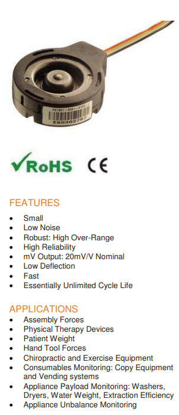
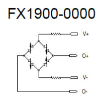
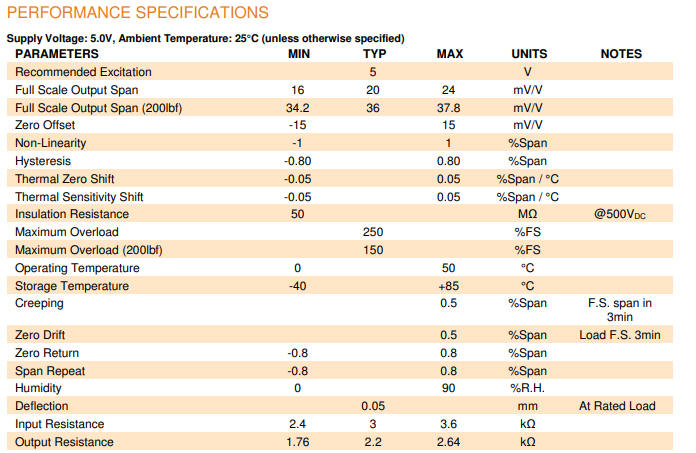
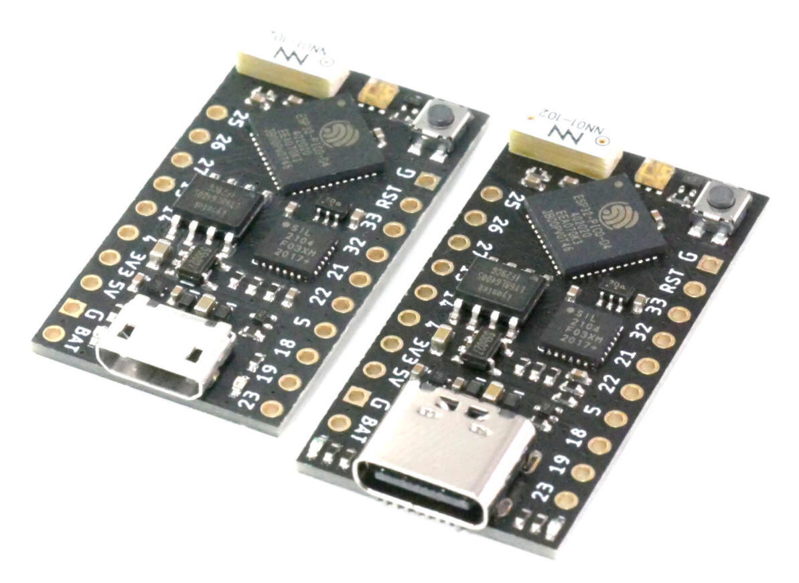
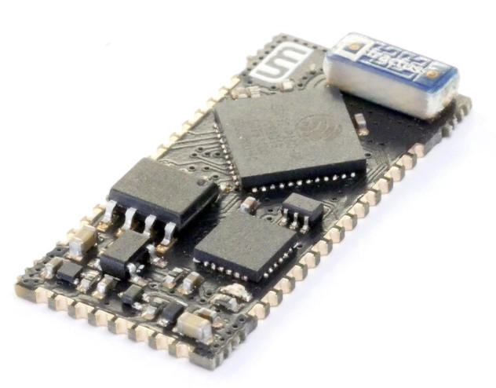

Requirements for the choice of force sensor are:
- size
- availability
- electrical connectivity
- need for signal
amplifier
Due to the size and shipping restraints, the round
FX1901 strain-gage sensor is picked. The plastic housing can be
removed to reduce the size of the unit. Force is applied on the
center bump. With a diameter of 19,2mm, it is suitable to be mounted
into the foot of a crutch.

Figure 3.8.1: Features of the FX1901 according to data sheet

Figure 3.8.2: Strain-gauge layout of FX1901
The sensor features 4 strain gages in
a configuration that is readable for the HX711 signal amplifier.

Figure 3.8.3: Technical specifications of the FX1901 sensor
Microcontroller:
The main requirement characteristics for the choice of
microcontroller are:
- size
- wireless connectivity
-
low-power sleep modes
- power consumption when in use
- cost
Since the first demonstrator unit of the intelligent crutch is
to be built purely as a function demonstrator, the size and cost
requirements are secondary. Wireless connectivity is a must, also
low power consumption in standby and use should be demonstrated.

Figure 3.8.4: TinyPICO ESP32 boards with micro-USB (left) and USB-C (right)
The TinyPICO is a ESP32 board which is very small (18mm x 32mm).
Compared to most regular ESP32 development boards, the number of
breakout-pins has been reduced. This will not affect the project,
since only a small number of sensors need to be connected.
The
TinyPICO offers a very low power consumption of
20uA when in deep sleep.
This suits the use case very well,
since it is possible to leave the device turned on for long periods
of time with no use.
The board is prepared to be powered directly
from a single-cell lithium battery. This suits the use-case of a
crutch very well, as the device must be very mobile.
The TinyPICO Nano is a different variant of the same ESP32 board, which is SMD. The size is
therefore reduced to 13mm x 27mm.

Figure 3.8.6: TinyPICO Nano SMD board
It is well suited for the integrated
PCB variant of the intelligent crutch. Manual soldering is possible.
The very small width make it theoretically possible to fit the
Microcontroller board into the tube of the crutch.